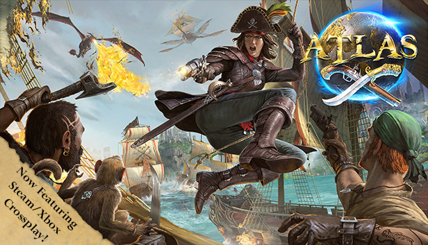

Atlas

Official capsule art, Atlas. Reproduced from Steam store assets.
A sprawling pirate-age MMO built on the bones of ARK's survival systems — crew a ship, chart open ocean, raid other companies' claims, and lose it all to a storm you didn't see coming.
Slow burn, big payoff. Best played with a full crew and nobody in a hurry.
- Genre
- Pirate MMO
- Party Size
- Server-wide
- Platform
- PC (Steam)
- FTA Status
- Active Rotation